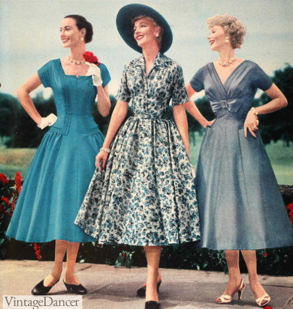

The dresses for Women in the 1950's were modest dresses that went to the calf.
The most popular type of dress was the circle dress, known for the circular shape of the skirt.
Gloves were also a trend.

During the 1950's, the world was still recovering from World War 2.
Due to men coming back home, there was a massive amount of births during the 1950's.
The people born during this decade were called the "Baby Boomers".
"Boomer", derived from baby boomers, is now a common expression given to old people and out-dated ideas.
Also, in the middle of the 1950's, the United States entered into another war, called the Vietnam War
This was a tragic war and very controversal, and although the United States never "lost", the U.S. was forced to pull out of Vietnam.
Many soldier's lives were lost, and the damage from chemical weapons used still affect people today.
Despite this, during and after the war, soldiers were treated poorly and were disrespected.
One of my relatives served during Vietnam, and he said "Right when we landed back to the U.S., I went into
the bathroom and threw my uniform into the garbage." He told me this after explaining that people were
throwing their drinks and food at the soldiers returning. It is a sad story, but luckily not the case anymore.